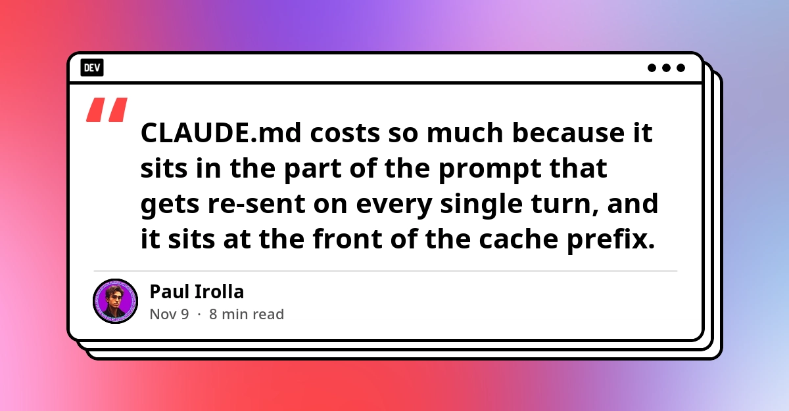
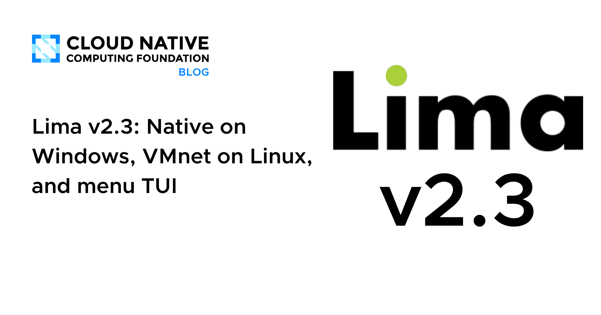
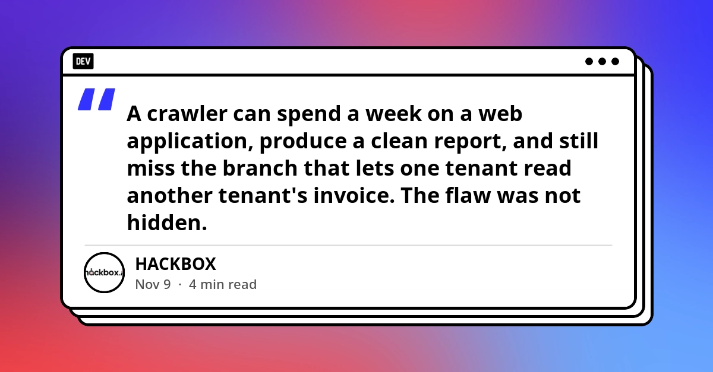
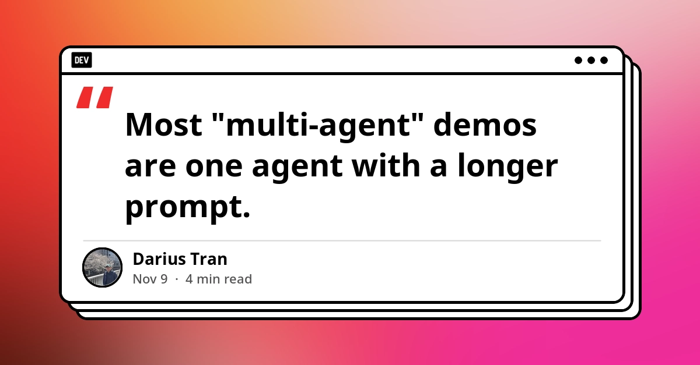

🔥 Top 3 (must read)
CLAUDE.md: How a Bloated File Inflates Your Bill
CLAUDE.md is placed at the front of the prompt and sent again on every turn, so a large file is billed again on every request in the session. If the file changes between sessions, it also breaks prompt caching, and you pay full price instead of about 10% of the cost for cached input. Why it matters: You use CLAUDE.md files across many repos and bots. Small, stable files cut your costs right away.

Goldman Sachs is pulling Claude Code from its bankers and traders
(HN discussion) A report says Goldman Sachs is removing Claude Code access for its bankers and traders. The story drew 634 points and 363 comments on Hacker News. Why it matters: This is a real example of a large company changing who gets coding agents. It is useful input for your own AI rollout and access policy.
Claude Code vs Cursor vs Copilot: Which Is Best in 2026?
The comparison starts from one point: these are three kinds of product. Claude Code is a terminal agent, Cursor is an AI-first editor, and Copilot is an assistant that plugs into your editor and GitHub. It was updated on 5 Nov 2026 and includes a log of this year's many pricing changes. Why it matters: As an EM, this helps you match the tool to each workflow when you pick or budget for team tools.
🛠 Tools & releases
Lima v2.3
: runs natively on Windows with no extra dependencies, using the Host Compute System. It also adds VMnet networking on Linux and a menu TUI. This matters if your team runs local container or VM setups on mixed operating systems.

parse_number() as a SQLite extension: C vs Rust
: Simon Willison compares how hard it is to write the same SQLite extension in C and in Rust. The function turns strings like
-$1,234.56 or 12.5% into numbers you can sum and sort.S
🤖 AI for developers
Reading the Authorization Line
: AI code audits can find authorization bugs, like one tenant reading another tenant's invoice, that black-box crawlers never reach. The post also shows how to prove the finding at runtime.

The Evidence Log
: when an agent does something wrong, you first need a record of what happened. The post argues you should build that record before you make the agent faster.
Building a Multi-Agent Supervisor in Python
: a step-by-step guide to a supervisor that routes each request, passes on context, and knows when to stop. It uses plain Python with a stub where the model call goes.

👔 Engineering & teams
Goldman Sachs pulling Claude Code
: see Top 3. It is a useful case for decisions about who gets agent access.
🎯 For me
CLAUDE.md cost: this applies directly to your bots (
ai-news-reports, slack-claude-bot) and your global CLAUDE.md. A long or often-edited file costs you on every turn.AI code audit vs black-box tests: this fits your test-strategy interest. It shows where E2E and crawler tests stop and where code-level review is still needed.
Lima v2.3: an option for local container and VM dev setups across the team's machines.
🎓 Try this
Audit your CLAUDE.md files with the ideas in CLAUDE.md: How a Bloated File Inflates Your Bill. Keep them short, and keep the top part stable so the prompt cache prefix stays valid. Move rarely used details into files the agent reads only when it needs them.